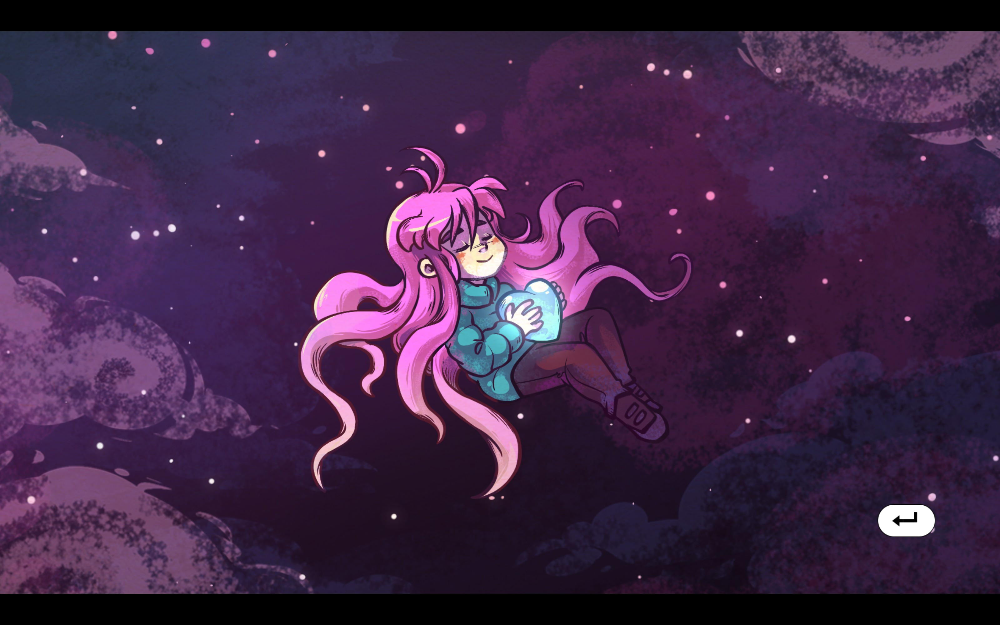

Celeste
迄今为止，对我毋庸置疑影响最大的一部作品，一部当之无愧的神作，绝对的第九艺术，平台跳跃游戏的巅峰之作。
抛开剧情不谈，光是游戏本身的乐趣就以足够让人进入心流的状态，主角的移动只有左右，跳跃，抓墙，冲刺。在后期出现了两次冲刺机会。但仅仅是这么简单的操作方式，其衍生出来的各种技巧可以说是层出不穷，配合上游戏内关卡的各种机制，让整个游玩过程充满趣味。而点睛之笔在于其关键的“惯性”机制，依靠简单的冲刺惯性和各种机关提供的各种加速，我们可以将速度提升到匪夷所思的程度，所谓“贴地飞行”。制作者在冲刺和跳跃上埋了太多的机制，以至于由此开发出的技巧数不胜数：切板跳，蹭墙跳，凌波微步，hyper dash，super dash，充能super，果冻跳，兔子跳，5-jump……诚然里面的很多技巧都颇有上手和应用难度，而这，牵涉到了蔚蓝的另一个将其带上神作的点——极度平滑的难度曲线。
我相信让一个零基础的人直接去打第九章，那可能上万次的死亡都不一定能让其看到终点，但如果让其一路从1A到8A，再把b面和c面打完，那再没有天赋的人也能在5k次左右抵达终点（更没有的人在前面就已经淘汰了）。而这就是合理的难度曲线的结果，每一关的难度或许会上升，但绝不会让人感觉到绝望。刚入坑的时候我看过全流程攻略，我的想法是：这是人能打的？我拿头过啊。而当我真正到那一关时，却也会发现似乎也不是没有希望。但毋庸置疑的是，蔚蓝的关卡极度有挑战性。
我将其盛赞为平台跳跃的巅峰之作自然不可能只是因为丰富的机制和难度曲线，很大一部分原因也是作为一款单机游戏绕不过去的一个点——难度。作为一款非常纯粹的平台跳跃，Celeste的难度相当可怕。即便是在打完了所有前置后来到第九章，也会失败数千次，而全流程乃至全成就再怎么说也会死亡上万次，而这只是176草莓，而更可怕的202（指全部章节的0死通关） 需要极度枯燥的“炼金”，当完成这一过程时，便也算的上当之无愧的大神了。纵观关卡，其本体已经有相当高的难度了，而在路上的收集物：草莓，节奏面后的磁带，A面的蓝星，末尾的月梅乃至于无伤的金草莓。这些收集物所指示的路线往往更加困难，有时甚至需要一点点解谜。但这并不意味着这个游戏是以难度来作为门槛吸引所谓高端玩家入场的，如若你对于亲手打完没有执念，只是想看看剧情或是沉迷于这种氛围中，游戏自带了辅助模式，你可以增加冲刺次数，游戏速度，乃至于最轮椅的无敌模式，难度只是乐趣，而不是阻拦你体验这个游戏的门槛。
而减轻和抵消死亡的挫败感的，是近乎没有的死亡惩罚和过关后的成就感。不同于魂类游戏一些饱受人诟病的点，蔚蓝中的死亡不会消耗任何物品，几乎没有加载和额外跑图时间，唯一的影响只是在记录上的数字又加了1而已，这很容易让人一遍遍的不停游玩——死了再来就是。我见过吐槽蔚蓝太难的，抑或是某些机制太恶心（煤球弹球冰球火球滚出蔚蓝），但我没有见过吐槽蔚蓝有非常恶心人的非必要难度。成就感则来自于非常精巧的关卡设计，在一遍遍尝试中你可以清晰地感觉到自己的熟练度在飞速上升，过关后你可以确实的感受到自己的能力是有所提升的。当熟练的按出一长串间隔只有几帧的操作时，那种满足感难以言喻。
除了玩法上的精妙，蔚蓝的画风和音乐也相当不错，其像素画的画风在节省经费的同时减轻了关卡构建的难度，但这绝不意味着缺乏美感，相反，既不喧宾夺主但又足够有氛围感的美术相当令人舒适。音乐同理，虽然不算非常出彩但也做到了一个游戏的本分，舒缓因为无数次死亡带来的焦躁感。
我无数次质疑自己能否完成这个游戏，也因此无数次放下这个游戏。但无论间隔多久，我最终都会想起来，开始复健，打过上一次让我破防的关卡，接着一直打下去。我也因此无数次调侃自己是个m，诚然这无数次的死亡会让我看上去像是有这方面的倾向，但在一次次的死亡中我无法否认自己获得了精神上的宁静与放松——唯有在这个游戏里，我们可以为死亡次数欢呼。
《我在七年后等着你》
可玩性：5+/5
音乐：4.5/5
画面：5/5
剧情：5+/5
总评：5+/5
